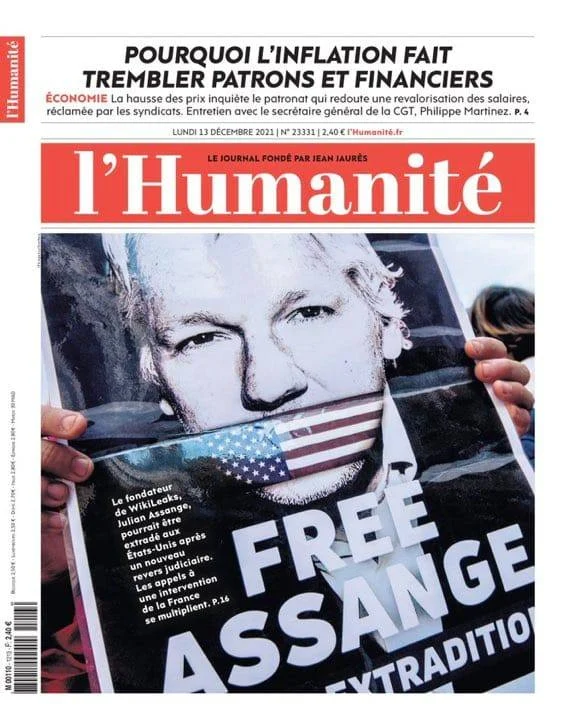

Publication d’archives
Liberté pour Julian Assange. Informer n’est pas un crime.
Date indiquée par Facebook · 13 décembre 2021
Texte conservé avec la publication
Contexte du dossier
Le 13 décembre, le mot d’ordre est bref : liberté pour Julian Assange, informer ne doit pas être un crime. Le 8 février 2022, le relais d’un article de Pierre Barbancey dans L’Humanité précise le débat parlementaire français : une résolution non contraignante proposant de lui ouvrir l’asile a été rejetée. L’article rapporte notamment les interventions des députés communistes Pierre Dharréville et Stéphane Peu. Le passage du slogan au débat institutionnel met en jeu la protection des lanceurs d’alerte et la responsabilité de la France. Il ne renseigne pas sur le devenir judiciaire ultérieur du fondateur de WikiLeaks.

Sources
Archive rouge · export Facebook · AR-0002-FB-01996
À lire aussi · Le 4 février 2022, l’Assemblée rejette la résolution sur l’asile de Julian Assange